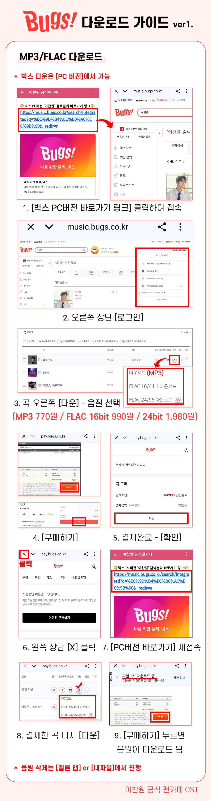
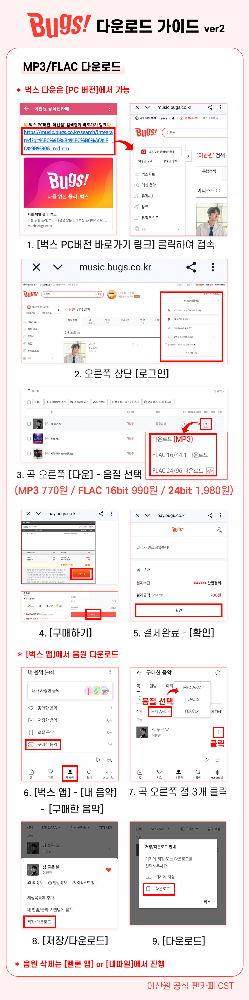
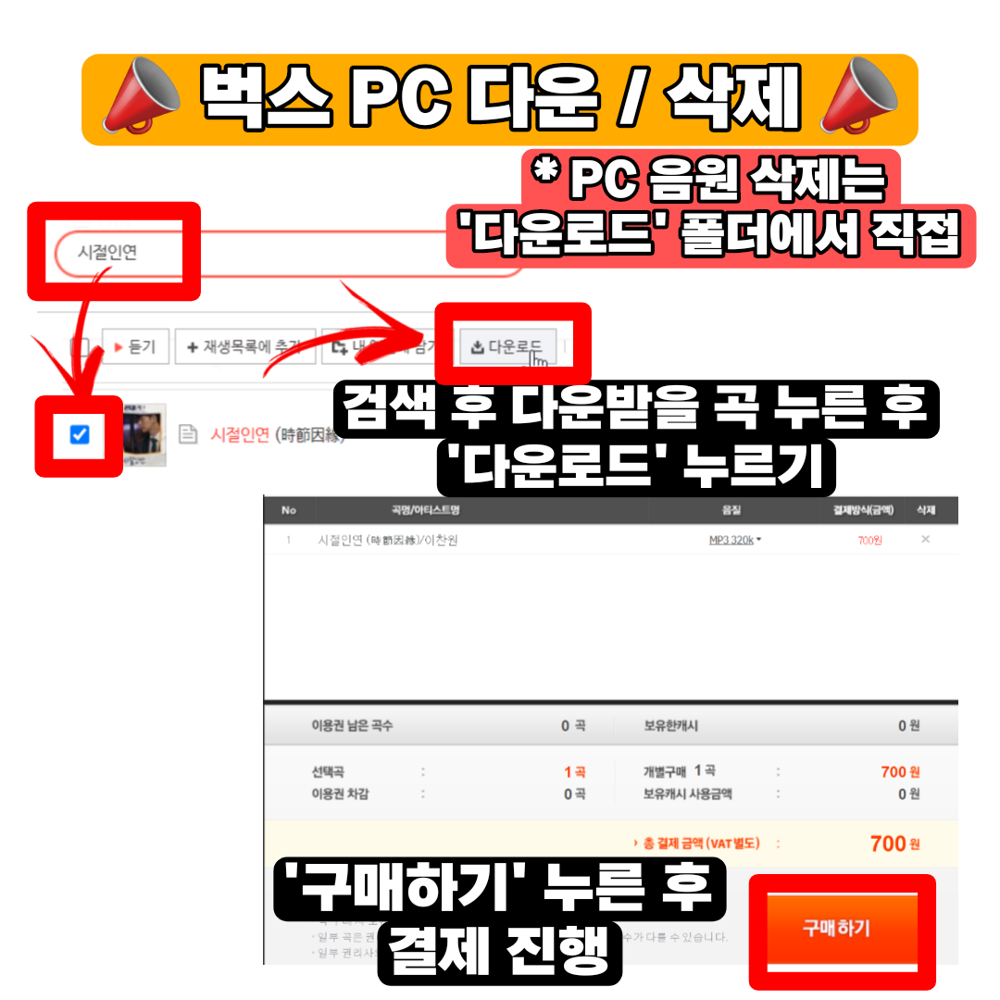

🐛 BUGS DOWNLOAD
벅스 음원 다운로드 & 파일 삭제 가이드
벅스 개별곡 다운로드 후 스밍 누락 방지를 위한 다운 파일 삭제 안내입니다.
🐛 벅스 다운로드 및 삭제 단계별 가이드
(이미지를 클릭하시면 고화질 원본으로 확대하여 보실 수 있습니다)



벅스 개별곡 다운로드 후 스밍 누락 방지를 위한 다운 파일 삭제 안내입니다.
(이미지를 클릭하시면 고화질 원본으로 확대하여 보실 수 있습니다)


